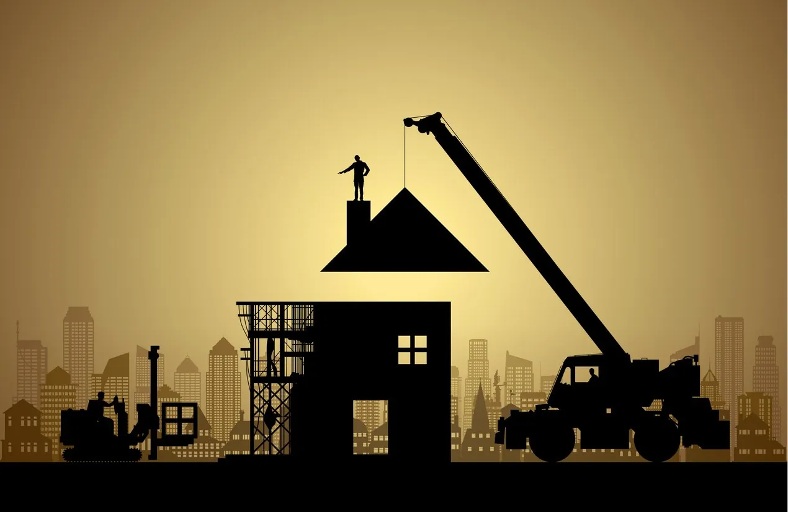
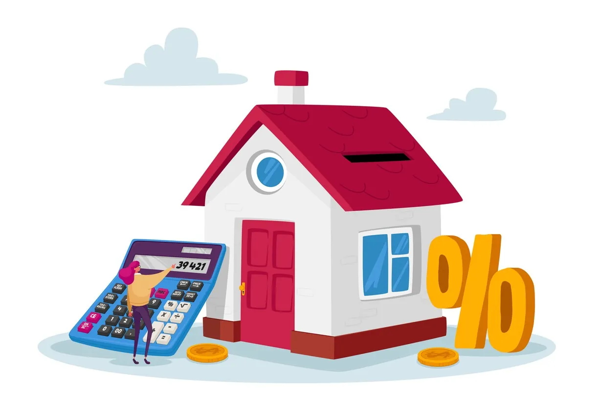

- Architectural Shingles
- Cap Sheet
- Composition Shingles
- Does a New Roof Increase Home Value? What You Should Know
- Impact Resistant Roof
- Laminated Shingles
- Luxury Asphalt Shingles
- Rolled Asphalt Roofing
- What Is a Built-Up Roof?
- What Is a Downspout?

If you’ve been weighing the pros and cons of various home remodeling projects, one thing you’ll want to consider is the potential to turn a profit at selling time. A pool or a patio can go a long way to increasing a home’s curb appeal, but what about a new roof? Does a new roof increase home value? Is an old roof a dealbreaker? And do home appraisers even look at the roof?
The answer to these questions depends on the current condition of your roof. If your roof is over 20 years old or damaged, then yes, a new roof will likely increase your home’s value. If your roof is in great condition, however, the answer to that question becomes a little more complex.
Let’s break down what you need to know before getting a low slope or flat roof replacement.
How Much Will a New Roof Increase Your Home Value?
The exact number will depend on how significant the improvements are and what kind of roof is installed. But replacing your roof can deliver an ROI, especially if the roof is old or damaged.

A study from the National Association of Realtors, for example, found that as far as exterior renovations were concerned, a new garage door and a new roof delivered the highest ROI at the point of resale. In both instances, 100% of the estimated replacement cost was recouped. This was followed by fiber cement siding at 86% and vinyl siding at 82%.
If you’re considering replacing your roof to enhance your home’s resale value, you’ll want to work with an experienced contractor to get a detailed estimate using the specific details of your project, such as the square footage and your location’s climate.
6 Signs You Should Replace Your Roof Before Selling
A common question homeowners ask when deciding to put their home on the market is: Do home appraisers look at the roof? That depends on the condition of the roof. A relatively young roof with few problems likely won’t attract attention.
However, if you notice at least one of the signs below, it might be time to give your home’s roof a complete makeover.
1. Sagging Areas
Sagging areas are one of the biggest signs that your roof needs replacing, as they could indicate deeper structural damage. These issues often range from old age to undetected rot.
While you can sometimes repair a sagging roof if the damage is minor, more extreme damage will likely require a complete replacement.
2. Buckling or Cracks
A buckling or cracked roof can make your home look weathered, which can tarnish your home’s appearance and hurt its curb appeal. With a new low slope roof or flat roof replacement, you can leave a strong first impression on potential buyers.
3. Leaks
Leaks can cause lasting structural damage, requiring expensive repairs that are likely to drive down a home’s value. Many buyers want a move-in ready home and may walk away from any deal that necessitates hiring a contractor immediately after purchase. A National Association of Realtors study found that a full 42% of homeowners wanted to avoid renovations when buying a new home.
4. Worn Areas
Harsh weather, like thunderstorms and windstorms, can gradually cause damp spots, leaving your roof at risk for leaks or mold growth.
Homeowners will be less interested in purchasing a house that’s already experiencing degradation, so in this instance, the answer to the question “Does a new roof increase home value?” is definitely “yes.”
5. Your Roof Is More Than 20 Years Old
Even the best roof will struggle to insulate your home after the 20-year mark. Is an old roof a dealbreaker? No, but selling your house will be easier when you don’t have to worry about a roof nearing the end of its lifespan. If your roof is more than 20 years old, then you’ll want to replace it before placing your home on the market.
6. High Energy Bills
If your energy bills are higher than expected, the underlying problem could be your roof, especially if it’s old or starting to crack. Cracking or crumbling roofs have poor insulation, which can cause your heating bill to skyrocket.
Reach Out to American Roofing to Increase Your Home Value With a New Roof
Does a new roof increase home value for your house? We’ll help you find out. At American Roofing, we’ve been helping homeowners with roof repair and replacement since 1954.
We provide professional inspections and a roof warranty to ensure you get the most value out of your roof replacement. Contact us today for a free quote.